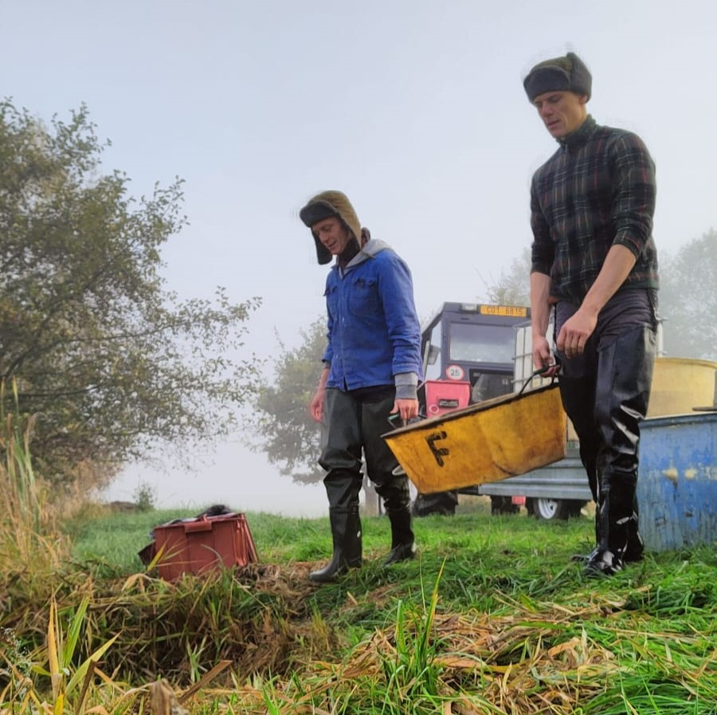

O Nás

Malá rodinná firma s velkým příběhem. To jsme my. Dobrý den!
Ve Statku Fencl se snažíme o návrat ke kořenům. Návrat k lokálním, dostupným a dobrým produktům, na které můžeme být pyšní. A hlavně návrat ve smyslu starat se a pečovat o naše dědictví aspoň z části tak dobře, jak to dělal už náš praděda.
Kapr od Fenclů je pojem. Spojení hospodaření v rybnících dle starých zvyků předků a čištění ryb v sádkách s pramenitou vodou, dávají dohromady recept na naši voňavou rybu, kterou rádi nabídneme i Vám!
Povolenky
POVOLENKA
DENNÍ
CENA:2700Kč
MAJITEL POVOLENKY SI SMÍ PONECHAT:
- 1ks vyjmenovéané ryby týdně
- 3 ks lána týdně
- 2 kg bílé ryby bez stanovení délky denně
POVOLENKA
TŘÍDENNÍ
CENA:2700Kč
MAJITEL POVOLENKY SI SMÍ PONECHAT:
- 1ks vyjmenovéané ryby týdně
- 3 ks lána týdně
- 2 kg bílé ryby bez stanovení délky denně